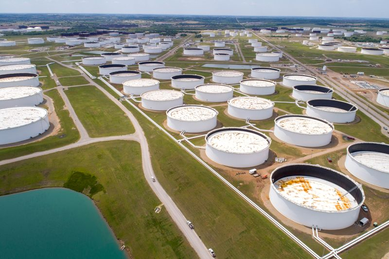

Oil flat as weaker dollar offsets surge in U.S. gasoline stocks
LONDON (Reuters) -Crude oil prices fell on Thursday after official data showed a big increase in U.S. gasoline stocks on the back of higher refinery runs while demand remained subdued compared with pre-pandemic levels.
Brent crude fell 22 cents, or 0.4%, to $62.94 a barrel by 1318 GMT.U.S. oil fell 37 cents, or 0.6%, to $59.40.
While crude oil stocks in the United States fell more than forecast by analysts, gasoline inventories rose sharply, the U.S. Department of Energy said on Wednesday.[EIA/S]
'A huge build in road fuel stocks is not what the market was expecting and concerns over the speed of the oil demand recovery resurfaced, leaving traders wondering how stable road fuel usage actually is,' said Rystad Energy analyst Bjornar Tonhaugen.
U.S. crude oil inventories dropped by 3.5 million barrels last week to nearly 502 million barrels while gasoline stocks increased by 4 million barrels to a little more than 230 million barrels as refiners ramped up output before the summer driving season.
'The increase in oil product stocks is probably not due to weaker demand … but to high refinery utilisation,' Commerzbank analysts said.
Still, demand remains weakened by the impact of the coronavirus.
At the same time, Russian oil output increased from average March levels in the first few days of April, traders said.
Iran and the United States held talks with other powers on reviving a nuclear deal that almost stopped Iranian oil from coming to market, reviving tentative hopes Tehran might see some sanctions lifted and add to global supplies.
However, the International Monetary Fund said this week that the massive public spending deployed to combat the COVID-19 pandemic could increase global growth to 6% this year, a rate not achieved since the 1970s.
Higher economic growth would boost demand for oil and its products.
ANZ Research said it expects Brent crude to reach about $75 a barrel in the third quarter.
(Additional reporting by Aaron Sheldrick in TokyoEditing by David Evans, David Goodman and Susan Fenton)
Posted On: 2021-04-08T00:00:00
Posted By: Shadia Nasralla

Content Date: 2021-04-08
Download Date: 2021-04-16
Document ID: L0C04A2UD